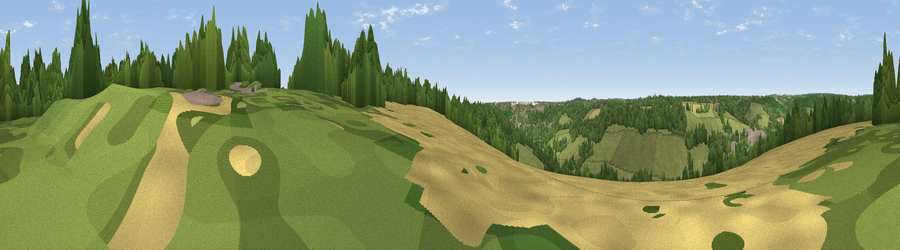

Viewpoint near Hughenden Valley
#40314 in England · top 65% of its area beats it · near Hughenden ValleyThe view, rendered

A 360° render of this exact spot computed from the terrain model, tree cover and land cover — summer colours, afternoon light, calibrated against photographs of famous viewpoints. Real trees, hedges and buildings will differ in detail.
The panorama
Grey silhouette: terrain skyline in each direction (720 bearings, Earth curvature and refraction included). Dashed green: skyline with trees (+15 m) and buildings (+8 m) as obstacles. Blue strip: how far the ground is visible on each bearing.
Where the view opens
Wedge length = distance to the farthest visible ground on that bearing (vegetation-aware). Rings at 10, 25 and 50 km.
What fills the view
45% grassland · 34% woodland · 16% cropland · 5% built-up
Angular shares of the visible panorama (visual magnitude), not map area. Landscape diversity 0.50 (0–1 Shannon).
Key numbers
More beautiful places nearby
The staircase of upgrades: each row has a higher view potential than everything closer. Driving times are estimates from straight-line distance, calibrated against real road routing — check an actual route before setting out.
| Place | Direction | Drive | Score |
|---|---|---|---|
| Viewpoint near High Wycombe | S · 2 km | ~6 min | 32.2 |
| Viewpoint near Downley | W · 3 km | ~7 min | 49.2 |
| Viewpoint near Whiteleaf | NW · 9 km | ~17 min | 58.2 |
| Brush Hill | NW · 9 km | ~18 min | 67.9 |
| Viewpoint near Whiteleaf | NNW · 9 km | ~18 min | 70.1 |
| Beacon Hill | NNW · 11 km | ~20 min | 72.7 |
| Coombe Hill Monument | NNW · 11 km | ~21 min | 75.5 |
| Beacon Hill | SW · 57 km | ~79 min | 76.7 |
51.65760, -0.74044 · source: screening · position refined by local search. Computed location — check access rights before visiting.